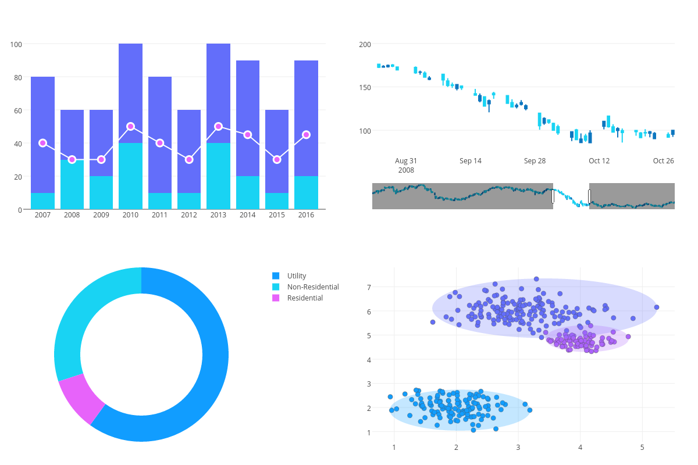

<div class="second-screen-container" [style.backgroundColor]="plan ? 'transparent' : 'black'">
  <div *ngIf="plan; else elseBlock">
    
    <div *ngFor="let layer of plan.map.mapLayers" class="left-card" [style.opacity]="layer.name === nextLayer ? 1 : 0">
      <h2>{{ layer.displayName }}</h2>
      
      <p>{{ layer.secondScreenText }}</p>
    </div>
    <div class="right-card">
      <h2 class="chart-title">
        Sample Chart
      </h2>
      
      <div class="year-display-container">
        <hr>
        <h1>{{ currentYear }}</h1>
        <hr>
      </div>
    </div>
  </div>

  <!-- loader called until plan is set-->
  <ng-template #elseBlock>
    <div class="loading">
      <div class="lds-facebook">
        <div></div>
        <div></div>
        <div></div>
      </div>
      <h2>Getting The Second Screen Ready</h2>
    </div>
  </ng-template>
</div>
